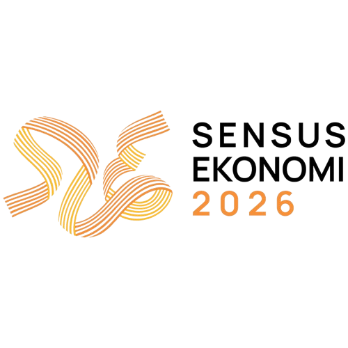

Tautan tidak ditemukan
Kami tidak dapat menemukan tautan yang cocok dengan kata kunci pencarian Anda. Coba kata kunci lain.

Akses seluruh dokumen, formulir, dan sistem panduan dengan cepat dan mudah dalam satu tempat terpadu.
Kami tidak dapat menemukan tautan yang cocok dengan kata kunci pencarian Anda. Coba kata kunci lain.